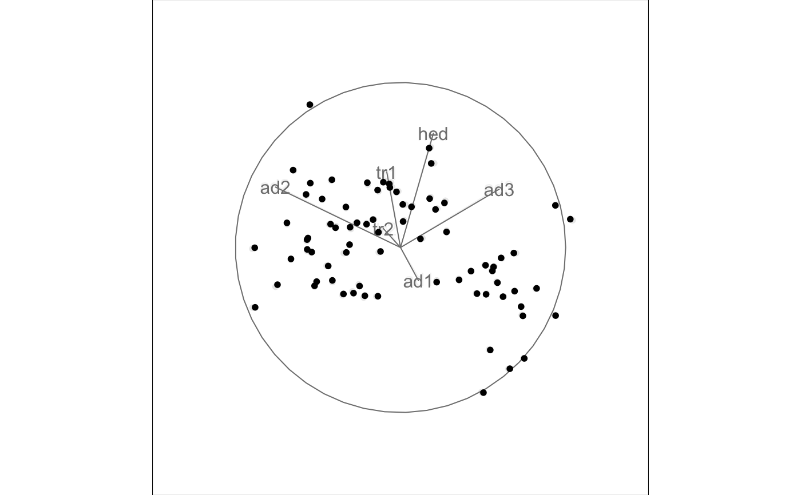
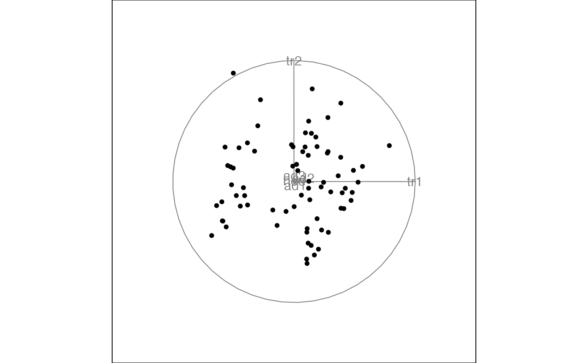
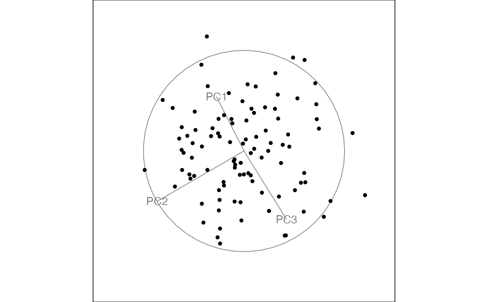
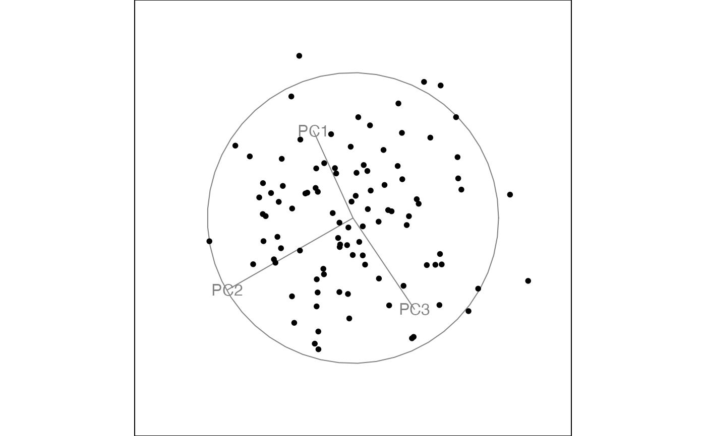
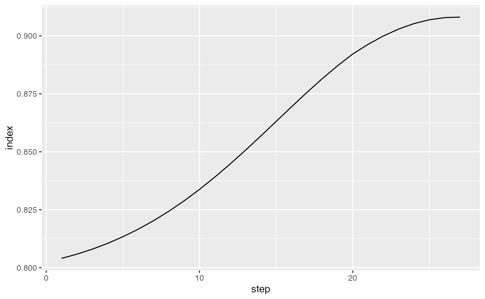

Save a tour path so it can later be displayed in many different ways.
Usage
save_history(
data,
tour_path = grand_tour(),
max_bases = 100,
start = NULL,
rescale = FALSE,
sphere = FALSE,
step_size = Inf,
...
)Arguments
- data
matrix, or data frame containing numeric columns
- tour_path
tour path generator
- max_bases
maximum number of new bases to generate. Some tour paths (like the guided tour) may generate less than the maximum.
- start
starting projection, if you want to specify one
- rescale
Default FALSE. If TRUE, rescale all variables to range [0,1]?
- sphere
if true, sphere all variables
- step_size
distance between each step - defaults to
Infwhich forces new basis generation at each step.- ...
additional arguments passed to tour path
Examples
# You can use a saved history to replay tours with different visualisations
t1 <- save_history(flea[, 1:6], max = 3)
#> Converting input data to the required matrix format.
animate_xy(flea[, 1:6], planned_tour(t1))
#> Converting input data to the required matrix format.
#> Using half_range 4.4


## andrews_history(t1)
## andrews_history(interpolate(t1))
## t1 <- save_history(flea[, 1:6], grand_tour(4), max = 3)
## animate_pcp(flea[, 1:6], planned_tour(t1))
## animate_scatmat(flea[, 1:6], planned_tour(t1))
## t1 <- save_history(flea[, 1:6], grand_tour(1), max = 3)
## animate_dist(flea[, 1:6], planned_tour(t1))
testdata <- matrix(rnorm(100 * 3), ncol = 3)
testdata[1:50, 1] <- testdata[1:50, 1] + 10
testdata <- sphere_data(testdata)
t2 <- save_history(testdata, guided_tour(holes()),
max = 5
)
#> Target: 0.896, 11.5% better
#> Target: 0.908, 1.3% better
#> No better bases found after 25 tries. Giving up.
#> Final projection:
#> -0.268 0.963
#> -0.865 -0.236
#> 0.423 0.128
animate_xy(testdata, planned_tour(t2))
#> Using half_range 3.4


# Or you can use saved histories to visualise the path that the tour took.
plot(path_index(interpolate(t2), holes()))

# And you can plot any individual frame using
best_prj <- matrix(t2[,,3], ncol=2)
p <- render_proj(testdata, best_prj)
# which creates a data frame with the elements
# to make the plot, see render_proj() for plotting code
# OR see draw_tour_axes() for similar code in base graphics